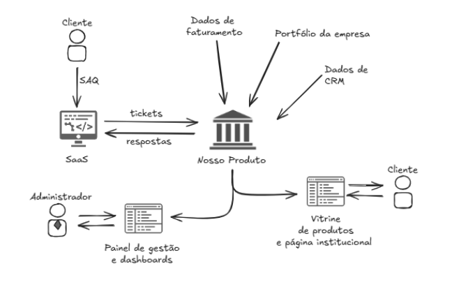
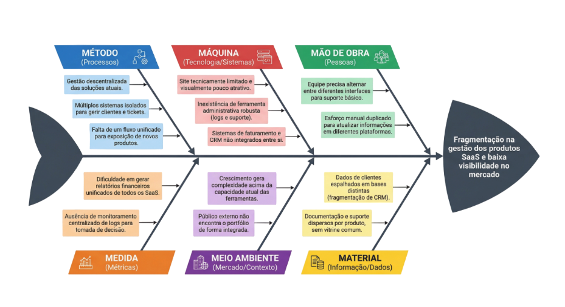
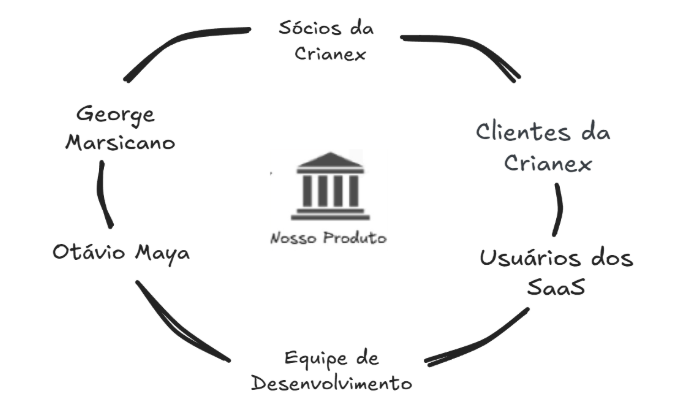

1. Cenário Atual do Cliente e do Negócio¶
Histórico de Revisão¶
| Versão | Data | Descrição | Autor(es) |
|---|---|---|---|
| 1.0 | 01/04/2026 | Criação das seções 1.1 a 1.8 | Lucas A. Zanetti |
| 1.1 | 03/04/2026 | Revisão geral | Equipe Crianex |
| 1.2 | 09/04/2026 | Ajustes pós reunião de alinhamento | Equipe Crianex |
1.1 Identificação do Cliente¶
| Campo | Informação |
|---|---|
| Empresa | Crianex Software House |
| Segmento | Desenvolvimento de software B2B sob demanda |
| CTO | Otávio Maya |
| CSO | Vitor Marconi |
| Modelo de negócio | Software House que desenvolve soluções digitais para clientes corporativos |
| Perfil operacional | Múltiplos projetos simultâneos com equipe distribuída |
1.2 Introdução ao Problema¶
A Crianex é uma Software House B2B especializada no desenvolvimento de soluções digitais sob demanda para empresas. Atuando com múltiplos projetos simultâneos e uma equipe distribuída, a organização enfrenta dificuldades crescentes para gerenciar internamente o status de cada projeto e, ao mesmo tempo, apresentar seu portfólio de maneira eficaz ao mercado externo.
A empresa não possui atualmente uma ferramenta centralizada que unifique a gestão operacional interna com a divulgação profissional dos seus produtos e entregas, o que gera retrabalho, falta de visibilidade e perda de oportunidades comerciais.
1.2.1 Contexto Organizacional¶
A Crianex opera com uma estrutura enxuta onde gestores técnicos acumulam responsabilidades de acompanhamento de projetos e relacionamento com clientes. A ausência de uma plataforma centralizada força o uso paralelo de planilhas, chats e ferramentas genéricas de gestão que não se comunicam entre si.
1.2.2 Problema de Visibilidade Interna¶
O acompanhamento do status de projetos é feito de forma descentralizada: cada gestor mantém seu próprio registro, sem uma visão consolidada para a liderança. Isso resulta em reuniões frequentes de alinhamento e dificuldade para identificar gargalos ou riscos em tempo real.
1.2.3 Problema de Visibilidade Externa¶
A Crianex não possui uma vitrine digital estruturada para apresentar seu portfólio ao mercado. O portfólio é comunicado ad hoc, via apresentações manuais ou conversas, sem um canal digital profissional que facilite a captação de novos clientes B2B.
1.2.4 Oportunidade Identificada¶
A unificação da gestão operacional interna com uma vitrine digital pública em uma única plataforma representa uma oportunidade de alto valor para a Crianex: reduz retrabalho interno e aumenta simultaneamente a capacidade de captação comercial.
1.3 Rich Picture¶
O cenário atual mostra a Crianex operando com múltiplos sistemas isolados para gerir produtos, clientes, tickets e faturamento. Os clientes interagem com cada SaaS de forma separada, sem uma vitrine comum. A proposta visualiza a centralização onde o administrador gerencia o portfólio e o faturamento da empresa em um único ponto, além de possuir uma vitrine digital, a fim de divulgar seus softwares para expandir o alcance de seus serviços.
O Rich Picture abaixo representa o contexto do sistema e os fluxos de informação entre os principais atores e componentes do produto.

1.4 Detalhamento do Problema¶
| Campo | Descrição |
|---|---|
| O problema de | Gestão descentralizada de projetos e baixa visibilidade do portfólio no mercado |
| Afeta | A equipe interna da Crianex (colaboradores, gestores e liderança técnica) e potenciais clientes B2B |
| Cujo impacto é | Dificuldade no acompanhamento em tempo real do status dos projetos, retrabalho na consolidação de informações e oportunidades comerciais perdidas por falta de vitrine digital |
| Uma solução bem-sucedida seria | Uma plataforma unificada com área administrativa para gestão interna e uma vitrine digital pública para exposição do portfólio |
Diagrama de Ishikawa¶
O diagrama abaixo sintetiza as causas raiz que levam ao problema central identificado: a baixa visibilidade e a gestão descentralizada.

1.5 Desafios¶
Os principais desafios técnicos e organizacionais identificados para o desenvolvimento do produto são:
| # | Desafio | Descrição |
|---|---|---|
| 1 | Restruturação da Interface | Necessidade de reformular o site com base na identidade visual da empresa, adotando um layout responsivo que se adapte a diferentes dispositivos (como celulares e desktops). O desafio consiste em aplicar, de forma consistente, princípios de design contemporâneo, como layout minimalista, uso adequado de espaçamento (white space), tipografia padronizada e organização clara das informações, garantindo uma melhor experiência do usuário. Além disso, é necessário assegurar que essas mudanças consigam refletir a qualidade técnica da empresa e contribuir para o aumento de sua credibilidade. |
| 2 | Integração de Gestão | Consolidar diferentes funcionalidades, como gestão de clientes (CRM), controle de tickets de atendimento, faturamento e registro de atividades e projetos, em uma única plataforma estável e integrada. Esse processo envolve a unificação de dados, a padronização de processos e a garantia de comunicação eficiente entre os módulos, de modo a evitar inconsistências e retrabalho. Além disso, é necessário assegurar que o sistema mantenha desempenho, segurança e confiabilidade, mesmo com a centralização dessas operações. |
| 3 | Segurança e Escalabilidade | Implementar a solução em conformidade com as diretrizes da OWASP, e paralelamente, assegurando que a plataforma seja escalável capaz de suportar o aumento progressivo de usuários e volume de dados sem perda de desempenho. |
1.6 Mapa de Stakeholders¶
O diagrama abaixo representa os principais stakeholders do projeto e sua relação com o produto.

| Stakeholder | Papel | Interesse principal | Influência |
|---|---|---|---|
| Sócios da Crianex | Patrocinadores e decisores do projeto | Validar direção estratégica, garantir retorno e crescimento do negócio. | Alta |
| Otávio Maya | Representante do cliente | Validar escopo do projeto, entregas e suas ordens. | Alta |
| Clientes da Crianex | Compradores/assinantes dos SaaS | Controlar a vitrine digital, dashboards e suporte ao usuário. | Média |
| Usuário do Saas | Usuários finais dos SaaS oferecidos | Acessar e solicitar serviços oferecidos | Baixa |
| Equipe de Desenvolvimento | Responsáveis pela construção e entrega do produto. | Entregar uma implementação técnica e viável do produto | Alta |
| George Marsicano | Representante da faculdade | Validação do projeto em relação às diretrizes da disciplina. | Alta |
1.7 Segmentação de Clientes¶
A plataforma Crianex Hub atende a perfis distintos de usuários, cada um com necessidades, objetivos e formas de interação diferentes com o sistema:
1.7.1 Administradores internos (sócios e gestores da Crianex)¶
Perfil de alta influência e poder de decisão. Utilizam o painel administrativo para acompanhar logs, dashboards financeiros, o CRM de clientes e o gerenciamento dos produtos SaaS expostos na vitrine. Seu interesse principal é ter visibilidade centralizada sobre a operação e os resultados do negócio, substituindo o uso de planilhas e sistemas isolados. Interagem com o sistema de forma recorrente e com alto grau de autonomia técnica.
1.7.2 Clientes empresariais da Crianex (compradores dos SaaS)¶
Empresas que contratam ou avaliam as soluções da Crianex (Avali, Pontua, Notifly e futuros produtos). Acessam a vitrine digital para conhecer o portfólio, comparam funcionalidades entre os produtos e utilizam o formulário de contato para iniciar negociações. Após a contratação, podem abrir tickets de suporte e acompanhar o status dos chamados. Seu interesse é encontrar rapidamente a solução adequada ao seu problema de negócio e ter suporte ágil pós-contratação.
1.7.3 Visitantes e leads da vitrine (potenciais clientes)¶
Público externo que chega à vitrine digital sem ter relação prévia com a Crianex. Podem ser atraídos por busca orgânica (SEO, razão pela qual o SvelteKit é preferível ao React) ou indicação. Não possuem acesso ao painel administrativo. Seu comportamento é exploratório: avaliam o portfólio, leem a página institucional e, se houver interesse, submetem o formulário de contato, tornando-se leads no CRM interno. Incluem tanto o mercado nacional quanto internacional, dado o suporte bilíngue da plataforma.
1.7.4 Equipe técnica da Crianex (desenvolvedores e mantenedores)¶
Perfil técnico que acompanha logs de aplicação, monitora status de projetos e acessa o painel de monitoramento centralizado. Seu interesse é ter rastreabilidade rápida de erros, visibilidade do estado dos produtos em produção e acesso ao histórico de tickets vinculados a cada SaaS. É um usuário interno do sistema, mas com necessidades distintas dos gestores, com foco em diagnóstico técnico, não em decisão estratégica.